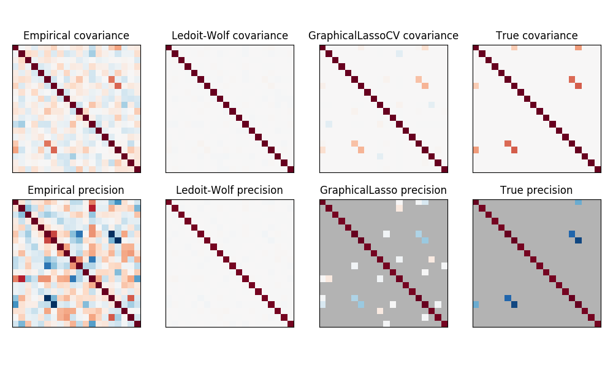
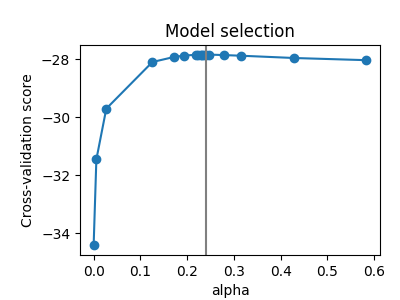

Note
Click here to download the full example code or run this example in your browser via Binder
1.8.2. Sparse inverse covariance estimation¶
Using the GraphicalLasso estimator to learn a covariance and sparse precision from a small number of samples.
To estimate a probabilistic model (e.g. a Gaussian model), estimating the precision matrix, that is the inverse covariance matrix, is as important as estimating the covariance matrix. Indeed a Gaussian model is parametrized by the precision matrix.
To be in favorable recovery conditions, we sample the data from a model with a sparse inverse covariance matrix. In addition, we ensure that the data is not too much correlated (limiting the largest coefficient of the precision matrix) and that there a no small coefficients in the precision matrix that cannot be recovered. In addition, with a small number of observations, it is easier to recover a correlation matrix rather than a covariance, thus we scale the time series.
Here, the number of samples is slightly larger than the number of dimensions, thus the empirical covariance is still invertible. However, as the observations are strongly correlated, the empirical covariance matrix is ill-conditioned and as a result its inverse –the empirical precision matrix– is very far from the ground truth.
If we use l2 shrinkage, as with the Ledoit-Wolf estimator, as the number of samples is small, we need to shrink a lot. As a result, the Ledoit-Wolf precision is fairly close to the ground truth precision, that is not far from being diagonal, but the off-diagonal structure is lost.
The l1-penalized estimator can recover part of this off-diagonal structure. It learns a sparse precision. It is not able to recover the exact sparsity pattern: it detects too many non-zero coefficients. However, the highest non-zero coefficients of the l1 estimated correspond to the non-zero coefficients in the ground truth. Finally, the coefficients of the l1 precision estimate are biased toward zero: because of the penalty, they are all smaller than the corresponding ground truth value, as can be seen on the figure.
Note that, the color range of the precision matrices is tweaked to improve readability of the figure. The full range of values of the empirical precision is not displayed.
The alpha parameter of the GraphicalLasso setting the sparsity of the model is set by internal cross-validation in the GraphicalLassoCV. As can be seen on figure 2, the grid to compute the cross-validation score is iteratively refined in the neighborhood of the maximum.
- 
- 
print(__doc__)
# author: Gael Varoquaux <gael.varoquaux@inria.fr>
# License: BSD 3 clause
# Copyright: INRIA
import numpy as np
from scipy import linalg
from sklearn.datasets import make_sparse_spd_matrix
from sklearn.covariance import GraphicalLassoCV, ledoit_wolf
import matplotlib.pyplot as plt
# #############################################################################
# Generate the data
n_samples = 60
n_features = 20
prng = np.random.RandomState(1)
prec = make_sparse_spd_matrix(n_features, alpha=.98,
smallest_coef=.4,
largest_coef=.7,
random_state=prng)
cov = linalg.inv(prec)
d = np.sqrt(np.diag(cov))
cov /= d
cov /= d[:, np.newaxis]
prec *= d
prec *= d[:, np.newaxis]
X = prng.multivariate_normal(np.zeros(n_features), cov, size=n_samples)
X -= X.mean(axis=0)
X /= X.std(axis=0)
# #############################################################################
# Estimate the covariance
emp_cov = np.dot(X.T, X) / n_samples
model = GraphicalLassoCV()
model.fit(X)
cov_ = model.covariance_
prec_ = model.precision_
lw_cov_, _ = ledoit_wolf(X)
lw_prec_ = linalg.inv(lw_cov_)
# #############################################################################
# Plot the results
plt.figure(figsize=(10, 6))
plt.subplots_adjust(left=0.02, right=0.98)
# plot the covariances
covs = [('Empirical', emp_cov), ('Ledoit-Wolf', lw_cov_),
('GraphicalLassoCV', cov_), ('True', cov)]
vmax = cov_.max()
for i, (name, this_cov) in enumerate(covs):
plt.subplot(2, 4, i + 1)
plt.imshow(this_cov, interpolation='nearest', vmin=-vmax, vmax=vmax,
cmap=plt.cm.RdBu_r)
plt.xticks(())
plt.yticks(())
plt.title('%s covariance' % name)
# plot the precisions
precs = [('Empirical', linalg.inv(emp_cov)), ('Ledoit-Wolf', lw_prec_),
('GraphicalLasso', prec_), ('True', prec)]
vmax = .9 * prec_.max()
for i, (name, this_prec) in enumerate(precs):
ax = plt.subplot(2, 4, i + 5)
plt.imshow(np.ma.masked_equal(this_prec, 0),
interpolation='nearest', vmin=-vmax, vmax=vmax,
cmap=plt.cm.RdBu_r)
plt.xticks(())
plt.yticks(())
plt.title('%s precision' % name)
if hasattr(ax, 'set_facecolor'):
ax.set_facecolor('.7')
else:
ax.set_axis_bgcolor('.7')
# plot the model selection metric
plt.figure(figsize=(4, 3))
plt.axes([.2, .15, .75, .7])
plt.plot(model.cv_alphas_, np.mean(model.grid_scores_, axis=1), 'o-')
plt.axvline(model.alpha_, color='.5')
plt.title('Model selection')
plt.ylabel('Cross-validation score')
plt.xlabel('alpha')
plt.show()
Total running time of the script: ( 0 minutes 0.665 seconds)